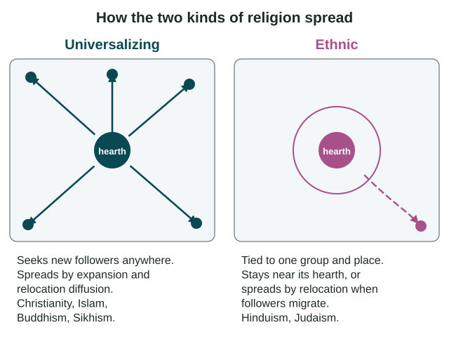

Two traits shape culture regions more than any others: the language people speak and the religion they follow. Both began in hearths, and both spread by the same kinds of diffusion you met in Topic 3.4. This topic traces their paths and the patterns they left on the map.
Languages in families
Languages are related the way people are. A language family is a group of languages that grew from one ancient ancestor. As speakers of that ancestor spread out and lost contact over many centuries, their speech split into branches, and each branch into separate languages.

The Indo-European family has the most speakers of any family. Its branches include Germanic (English, German), Romance (Spanish, French, Portuguese), Slavic (Russian, Polish) and Indo-Iranian (Hindi, Bengali, Persian). That is why English and Hindi, which sound nothing alike, are distant cousins. Other families include Sino-Tibetan (Mandarin) and Niger-Congo (which includes the Bantu languages, such as Swahili). Linguists still argue about how some families are grouped, so this course sticks to well-established ones.
A dialect is a regional version of one language. The Spanish of Mexico City and of Madrid, Spain, use some different words and sounds, yet speakers understand each other. Dialects also form inside one country, as in the different ways English is spoken in Boston and in Atlanta.
Ethnologue's 29th edition (2026) lists about 7,170 living languages. When you compare speaker counts, always say whether you mean first-language speakers or total speakers, because the two can differ by hundreds of millions for a language like English.
Place names tell history
A toponym is a place name. Toponyms record who named a place, so they are evidence of diffusion. Spanish names such as Los Angeles, San Francisco, Santa Fe and San Antonio record Spanish and Mexican rule across the US Southwest. Names can also be disputed. In 2025 the US federal government changed the official name of Denali, the highest mountain in North America, to Mount McKinley; Denali, the Koyukon Athabascan name, is still used by many Alaskans, and the national park around it is still Denali National Park.
Universalizing and ethnic religions
AP® Human Geography sorts major religions into two groups by how they spread. These are the course's labels, not ones that followers necessarily use, and in some forms Hinduism and Judaism do accept converts. Describe beliefs as "adherents believe," and never rank religions.

| Universalizing religions | Ethnic religions | |
|---|---|---|
| Examples in AP® Human Geography | Christianity, Islam, Buddhism, Sikhism | Hinduism, Judaism |
| Who can follow | Anyone, from any place or group | Mostly one people, tied to a homeland |
| How it spreads | Expansion (missionaries, traders, rulers) and relocation | Mostly relocation, when followers migrate |
| Pattern | Followers far from the hearth | Most followers near the hearth |
- Christianity began in the eastern Mediterranean. In the 300s, Roman emperors first allowed it and then made it the empire's official religion, a hierarchical spread; later missionaries and colonial rule carried it worldwide.
- Islam began in the 600s on the Arabian Peninsula and spread across Southwest Asia and North Africa. Muslim traders carried it to Southeast Asia, where rulers of many port kingdoms converted first and their subjects followed.
- Buddhism began in northeastern South Asia about 2,500 years ago. Monks, traders and rulers carried it east along trade routes, and most Buddhists now live in East and Southeast Asia, far from the hearth.
- Sikhism began in the Punjab region of South Asia in the late 1400s. Migration has carried it to cities such as Surrey, British Columbia, and Brampton, Ontario, where large gurdwaras stand.
- Hinduism has its hearth in South Asia, and most Hindus live in India, though migrants have built temples from London to Toronto.
- Judaism has its hearth in the eastern Mediterranean. Over many centuries Jewish people moved, often because they were expelled or persecuted, and carried their religion to many countries.
At the global scale, Pew Research Center's 2025 report (on 2020 data) counts Christians at 28.8% of the world's people, Muslims 25.6%, the religiously unaffiliated 24.2%, Hindus 14.9%, Buddhists 4.1% and Jews under 1%. Christianity was the largest group, and Muslims grew fastest from 2010 to 2020. Figures like these change, so always give the source and year.
Other traits spread from hearths too
Ethnic cultures and gender roles also spread from hearths: migrants carry ideas about family, work and who does what, and media spread new ideas about women's roles. Maps, charts and toponyms are the evidence for all of these paths.